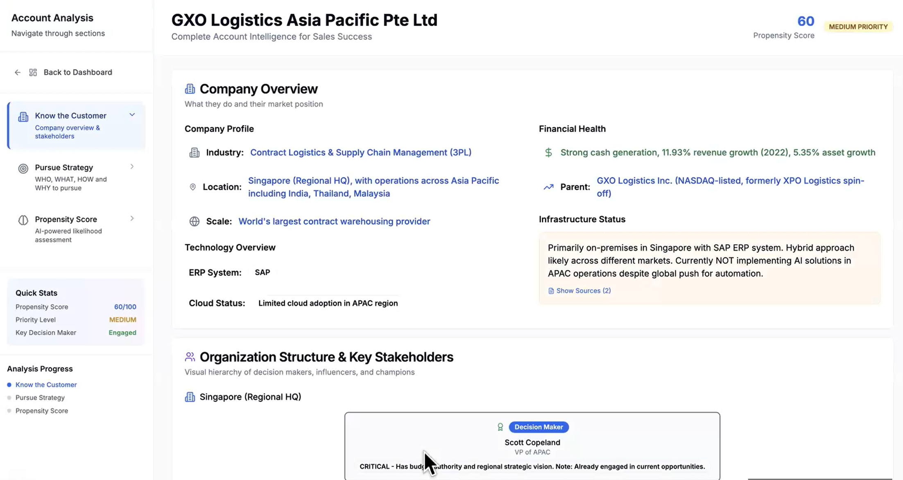
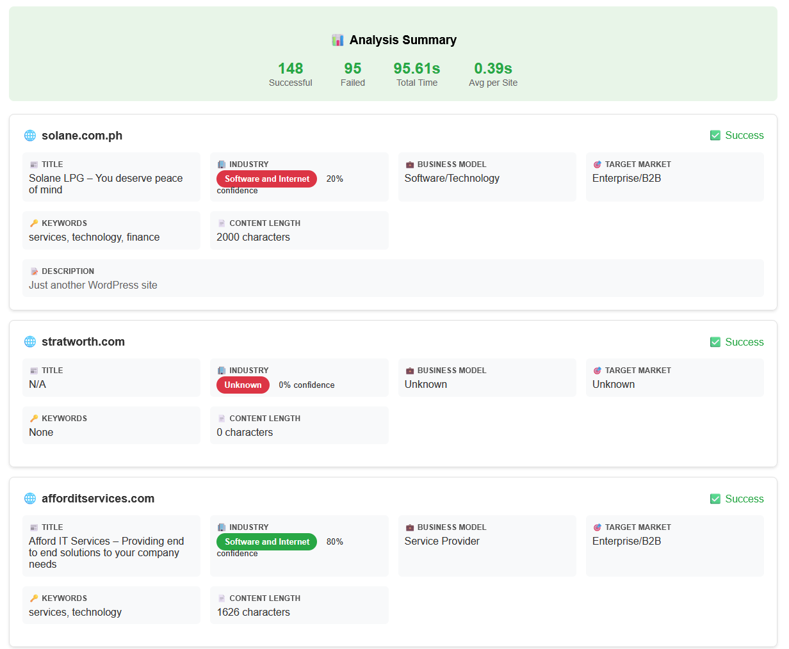

Signal Intelligence Dashboard for AWS Sales

👋 About This Project
I am Rachel, a Y4 Mechanical Engineering student from NUS, working on this Final Year Project in collaboration with Amazon Web Services. This report presents a GenAI-powered solution to automate sales account research and improve productivity for AWS sales representatives.
My Role: I served as project manager ensuring on-time delivery, led problem identification, and took hands-on responsibility for the data ingestion layer development, component testing, and system integration. With support from solution architect colleagues for technical guidance, our combined efforts drove the prototype development to where it stands today.
📖 How to Navigate This Report
🔍 Tooltips: Hover over underlined termsLike this example tooltip! for definitions
📋 Navigation: Use the floating Table of Contents on the left
📂 Appendices: Click appendix titles to expand detailed content
🖼️ Media: Click images to zoom, video has playback controls
A1. PROBLEM DEFINITION & VALUE PROPOSITION
1.1 The Problem & Persona
Persona: Sarah Tan – Demand Generation RepresentativeFront-line outbound sales role responsible for identifying potential customers and booking qualified meetings for Account Executives, AWS (Singapore)
Sarah is a DGRDemand Generation Representative - outbound sales role focused on creating new pipeline — a front-line outbound sales role responsible for identifying potential customers and booking qualified meetings for Account ExecutivesSenior sales professionals who close deals and manage customer relationships (AEs). Her performance is measured by the number of sales-qualified meetingsMeetings that meet criteria for passing to Account Executives, involving qualified decision-makers with confirmed budget/timeline (SQMsSales-Qualified Meetings - meetings that meet specific criteria for passing to Account Executives) she creates each week, which directly feeds AWS's new business pipeline.
Sarah manages a portfolio of 1,200 Small and Medium BusinessCompanies typically with <500 employees and <$50M revenue, representing potential cloud deals between $10K-$100K annually (SMBSmall and Medium Business - typically <500 employees, <$50M revenue) accounts, each representing potential cloud deals between US$10K–100K annually. Her target is to book 10 qualified meetings per week, converting research and outreach into tangible sales opportunities.
Within AWS's structure, DGRsDemand Generation Representatives - front-line outbound sales roles operate under tight time constraints. Interviews with eight AWS sales representatives show that only 12 out of 40 weekly working hours are typically allocated to prospecting. The remaining time is consumed by internal meetings, pipeline reviews, CRMCustomer Relationship Management system (e.g., Salesforce) updates, reporting, and follow-ups — leaving limited bandwidth for deep account research.
Psychographic Profile:
Sarah is ambitious, data-driven, and goal-oriented. She enjoys helping companies scale through cloud adoption but is often frustrated by the inefficiency of manual prospecting. Every hour spent researching low-potential accounts feels like a lost opportunity, especially when performance metrics depend on how efficiently she identifies the right leads.
The Core Problem: Sarah's challenge is twofold:
- Time inefficiency: Manual research across multiple systems takes roughly 10 minutes per account, limiting her to about 72 accounts per week—only 6–7% of her portfolio.
- Signal blindness: Within that 7%, her prioritization is based largely on static internal metrics (e.g., account revenue, cloud spend, AWS event attendance) rather than dynamic external buying signalsObservable indicators that a company may be ready to purchase a product/service (e.g., hiring, funding, leadership changes) (e.g., job postings, funding rounds, or leadership changes).
💰 The Cost of Missing Signals
Each week, roughly 45 high-intent accounts go undetected. Assuming an average AWS SMBSmall and Medium Business - typically <500 employees, <$50M revenue deal size of US$37,000 and 15% signal-driven conversion rate, these missed opportunities represent an estimated US$13.0M in unrealized annual pipeline per rep.
Sarah's problem is not one of motivation or skill — it is structural. Her tools and processes do not allow her to see which companies are actively evaluating cloud solutions in real time. (See Appendix F for glossary of technical terms.)
1.2 Current State – The Productivity & Prioritization Problem
Sarah's current prospecting process depends on four disconnected systems, each introducing friction and delay.
| Step | Purpose | Limitation |
|---|---|---|
| Salesforce (≈2 min/account) | Review account history, revenue tier, and past spending trends | Data often outdated; reflects past usage, not current purchase intent |
| LinkedIn (≈3 min/account) | Check leadership changes, hiring activity, and technology discussions | Unscalable across 1,200 accounts; signals are typically 5–7 days old when seen |
| Google News (≈3 min/account) | Search for funding, expansion, or new partnerships | Requires manual reading and synthesis; many relevant triggers are missed |
| Internal Propensity ScoresAI-generated likelihood rankings that predict which accounts are most likely to buy based on past engagement or usage data (≈2 min/account) | Identify "ready-to-buy" accounts using AWS's internal AI models | 40–50% false positives lead to distrust; six of eight interviewed reps revalidate scores manually |
Note: Propensity scoresAI-generated likelihood rankings that predict which accounts are most likely to buy based on past engagement or usage data are AI-generated likelihood rankings that predict which accounts are most likely to buy based on past engagement or usage data. However, their lack of explainability — sometimes referred to as a "black-box" problemAI system that produces outputs without explaining how it reached its decision — makes them difficult for sales reps to trust or act upon confidently.
Total research time: ~10 minutes per account
Portfolio coverage: ~7.2% of accounts analyzed weekly
How accounts are currently prioritized:
Due to time constraints, Sarah filters accounts primarily by revenue potential, previous AWS event attendance, or past spend. These are lagging indicators of engagement, not leading indicators of intent. Consequently, dormant accounts often appear "high value," while fast-growing companies showing clear external buying signals never reach her outreach list.
Result:
- Hours spent researching low-intent or inactive accounts
- Missed engagement with active buyers exhibiting early-stage purchase signals
- Lost opportunities as the optimal 24–48 hour engagement window closes before detection
1.3 Ideal State and Design Specifications
In the ideal state, Sarah starts her day with a real-time intent dashboard that automatically prioritizes her 1,200 accounts based on buying signals integrated from both internal AWS systems and external market intelligence.
How it works:
The system processes 1,000+ accounts daily, continuously monitoring hiring activity, funding rounds, executive updates, and event participation. Each account score includes transparent reasoning and source citations, allowing reps to see why an account is prioritized — addressing the trust deficit in current black-box models.
| Design Specification | Current Baseline | Target (Achievable Ideal) | Justification |
|---|---|---|---|
| Portfolio coverage | 7% (~72 accounts/week) | 60–80% (~720–960 accounts/week) | Automated signal detection increases visibility 5–8× |
| Research time per account | 10 minutes | 30–60 seconds | Unified data reduces manual effort by ~90% |
| Meeting conversion rate | 5% (cold outreach) | 15–20% (signal-based outreach) | Based on Gartner (2023) benchmarks for intent-driven sales |
| Signal detection rate | ~25% of total signals identified | 75–85% | APIApplication Programming Interface - allows different software systems to communicate integrations enable near real-time monitoring |
Note: See Appendix D for detailed explanations and data assumptions for "Achievable Ideal" targets.
Sarah now spends 90% of her time engaging high-intent buyers instead of manually researching cold accounts — turning data overload into focused selling.
1.4 The Gap in Demand Generation Representative's Performance
Six barriers prevent transformation:
- Human cognitive limits: Monitoring 1,200 accounts requires >100 hours/day—hiring scales headcount, not efficiency
- Strategic blindness: Prioritization relies on lagging indicators (revenue, events), not live intent signals
- Missing infrastructure: No AWS tool consolidates external ASEANAssociation of Southeast Asian Nations (Indonesia, Malaysia, Philippines, Singapore, Thailand, Vietnam, Brunei, Cambodia, Laos, Myanmar) signals; ZoomInfo/6sense cover <20% (ZoomInfo, 2024)
- Trust deficit: 40-50% false positives + black-box models undermine confidence
- Economic mismatch: Commercial platforms cost $50K-200K annually vs. <$0.05/account target
- Temporal mismatch: Manual weekly research misses 24-48 hour signal windows; conversion drops 3-4× (Salesmotion, 2024)
Data exists but cannot be surfaced fast or credibly enough to guide action.
1.5 Business Impact – The Opportunity Cost of Inaction
The cost of inaction compounds across dimensions:
💸 Cost of Inaction
This project bridges time inefficiency and signal blindness through scalable, ASEAN-optimized, explainable AI.
1.6 Solution Overview
This project introduces a GenAIGenerative Artificial Intelligence - AI that creates new content (text, code, images)-powered Signal Intelligence Dashboard designed to improve both the coverage and accuracy of account research. It addresses the six identified barriers through a three-layer architecture comprising automated data ingestion, AI-driven signal analysis, and an explainable user interface.
Demo Video: Signal Intelligence Dashboard in action
Click to view additional dashboard screenshots
Company Profile Overview

AI-Generated Talking Points
1. Data Ingestion Layer
Automates the collection of external data across 1,000+ accounts daily using APIs such as Perplexity and Tavily. It is optimized for ASEAN-specific and multilingual sources, overcoming the cognitive and infrastructural limits of manual research. This layer expands portfolio visibility from 7% to near-complete monitoring without additional headcount.
2. Signal Analysis Layer
Powered by Claude 3.5 SonnetLarge language model by Anthropic, used for natural-language reasoning and synthesis, this layer extracts structured insights, applies weighted intent scoring (e.g., hiring 40%, funding 30%, executive updates 20%, events 10%), and produces transparent natural-language reasoning with cited evidence. This explainability directly addresses the trust deficit in prior black-box models, allowing representatives to understand why an account is prioritized and to verify each insight against its source.
3. Dashboard Interface
Displays ranked accounts (0–100) with signal breakdowns, citations, and AI-generated talking points. By integrating explainable reasoning within the interface, representatives can validate insights before outreach, fostering confidence and adoption.
1.7 What Is Novel About This Project
This project is novel not simply because of its use of APIs or GenAI, but because it introduces a new workflow architecture for AWS sales representatives: (1) a proactive signal-driven workflow that replaces manual filtering; (2) a fully explainable AI layer that enables auditability and trust—something not present in any AWS internal tool; and (3) an end-to-end "signal-to-action" design that consolidates detection, interpretation, and ready-to-use talking points into a single user experience. Combined with ASEAN-optimised coverage at <$0.05/account, this project enables a level of scale, trust, and usability not achievable with existing tools.
A2. MARKET CONTEXT & VALIDATION
2.1 Industry Context
In today's digitally connected environment, sales data is abundant but fragmented. With the advancement of AI and LLMsLarge Language Models - AI trained on vast text data to understand and generate human language, it has finally become technically and economically feasible to synthesize these streams into actionable intelligence—for the first time, the cost structure exists to make intent-driven selling at scale achievable.
Gartner (2024) projects 75% of B2B organizations will adopt AI-guided selling by 2025, yet commercial platforms (ZoomInfo, 6sense) cost $50-200/account and cover <20% of ASEAN SMBs—leaving a critical gap for AWS Scale teams targeting <$0.05/account economics.
Competitive Gap:
| Solution | Automation | ASEAN Coverage | Explainability | Economics |
|---|---|---|---|---|
| ZoomInfo, 6sense | ✅ | ❌ <20% | ❌ Black-box | ❌ $50-200/account |
| AWS Internal Models | ✅ | ✅ | ❌ 40-50% false positives | ✅ |
| This Project | ✅ | ✅ | ✅ Cited sources | ✅ $0.032/account |
Internal Validation: Interviews with 8 AWS representatives (3 Scale, 3 Enterprise, 2 Nurture) confirmed: (1) 7% portfolio coverage due to 10-min research time, (2) 6/8 reps manually revalidate AI scores (40-50% false positives), (3) desire for explainable reasoning with citations. (See Appendix A for detailed findings.)
2.2 Organisational Context Within AWS
Demand Generation Representatives (DGRs) sit at the top of the SMB sales funnel and work closely with several adjacent teams:
- Cloud Sales Representatives / Account Executives (AEs): Take the first meeting booked by DGRs and drive deals to closure.
- Sales Managers: Monitor pipeline health, meeting volume, and productivity across the team.
- Marketing: Generates early-stage leads through regional campaigns, webinars, and events.
Despite their central role, DGRs currently stitch together information from multiple disconnected sources—Salesforce, internal lead-scoring tools, marketing lists, LinkedIn, and Google News—with no unified intent view. This fragmented process slows prioritisation, reduces portfolio coverage, and contributes to missed buying opportunities.
The proposed Signal Intelligence Dashboard fills this organisational gap by introducing a pre-Salesforce intent layer that surfaces prioritised accounts and explainable signals before outreach begins, complementing existing workflows rather than replacing them.
2.3 User Validation
Interviews with eight AWS representatives (3 Scale, 3 Enterprise, 2 Nurture) confirmed:
- ~7% portfolio coverage due to 10-minute research time per account
- 6 out of 8 reps manually revalidate AI scores due to 40–50% false positives
- Frequent switching between 4–5 systems creates cognitive load and inconsistent prioritisation
- Strong desire for explainable reasoning with citations rather than black-box predictions
Full interview data and methodology are provided in Appendix A. These findings validate the core problem and establish the foundation for the methodology described in Section A3.
A3. METHODOLOGY / CONCEPT DEVELOPMENT
The methodology centered on translating the identified barriers—limited visibility, low accuracy, and lack of trust—into a coherent design concept.
Conceptual Orientation: Human-in-the-Loop Co-Pilot
Early exploration contrasted full automation (autonomous prioritization and outreach) with a human-in-the-loop co-pilot model that assists representatives while preserving their judgment.
The latter was adopted because it directly addresses the trust deficit in Section 1.4: automation surfaces insights with transparent reasoning, but users remain responsible for interpretation and action. This reframes AI as a decision-support tool, not a decision-maker, ensuring transparency and user adoption.
Approach Evaluation
Three approaches were evaluated against project constraints (explainability, no training data, 3-month timeline, <$0.05/account cost):
| Approach | Data Needs | Explainability | Feasibility | Selection |
|---|---|---|---|---|
| Rule-Based | None | Minimal | Moderate | ❌ Fails contextual nuance |
| Predictive ML | High (labeled data) | None (black-box) | Low | ❌ No dataset exists |
| Generative AI | Low (zero-shot) | High (cited reasoning) | High | ✅ Selected |
Justification
Generative AI (Claude 3.5) provides explainable, citation-based reasoning without requiring training datasets, aligning with all project constraints while addressing both coverage (scales to 1,000 accounts) and trust (cited sources enable verification). This operationalizes "assisted intelligence" where automation scales data visibility and humans retain contextual judgment.
A4. FABRICATION OF SPECIMENS/PROTOTYPES
4.1 Prototype Evolution Overview
From July to October 2024, three prototypes validated the API-FirstSystem design that prioritizes Application Programming Interface access over web scraping for data retrieval + GenAIGenerative Artificial Intelligence architecture through systematic iteration. Each prototype addressed a specific limitation discovered in the previous, forming cumulative design logic rather than isolated experiments.
| Prototype | Technology Stack | Data Retrieval Success Rate | Critical Learning |
|---|---|---|---|
| P1 | Selenium + ScrapingBee | 32-68% | Official sites accurate but scraping architecturally unsound (36% bot blocks reduce data access) |
| P2 | Web Scraping + DuckDuckGo API + Claude 3.5 | 100% | Hybrid approach (scraping + API fallback) ensures data retrieval but unstructured snippets reduce accuracy |
| P3 | Perplexity + Tavily + Claude 3.5 | 100% | Specialized APIs + LLMLarge Language Model synthesis achieves complete profile retrieval (10/10 accounts) |
4.2 Why Each Transition Mattered
P1 → P2: Overcoming Data Retrieval Issues (July-August)
P1 Hypothesis: Official company websites contain the richest data—direct scraping should yield best results.
Reality: Modern websites actively block automation:
- 36% deployed Cloudflare challenges
- 28% used dynamic CSS selectors that break static scrapers
- Required 5 hours/week maintenance to update selectors
Key Decision: Abandon scraping entirely. Bot detection is an architectural barrier, not a technical challenge—fighting it is unsustainable.
P2 Solution: Multi-layer approach combining direct web scraping with API fallback. System first attempts direct scraping of company websites; if blocked by bot detection, it falls back to DuckDuckGo Search API to retrieve indexed content (titles, snippets, URLs), then feeds results to Claude 3.5 for synthesis. This hybrid approach maximizes data quality while maintaining reliability.
Result: 100% data retrieval success (no technical failures), but accuracy challenges due to unstructured snippets and duplicate information.

P2 → P3: Solving Timeliness and Data Structure Challenges (August-October)
P2 Limitation: Search APIs returned unstructured text snippets that often:
- Duplicated information across results
- Missed recent hiring activity (job boards not well-indexed by DuckDuckGo)
- Lacked recency (cached search results 7-14 days old)
Key Insight: AI reasoning quality depends on input data quality. Claude synthesized well, but "garbage in, garbage out"—it needed structured, real-time signals.
P3 Solution: Dual-API architecture with specialized sources:
- Perplexity API: Real-time news/company intelligence across 100+ curated sources with citations (addresses recency + credibility)
- Tavily API: Structured job board aggregation with parsed metadata (addresses hiring signal gap)
- Claude 3.5: Synthesizes both into explainable scores with natural-language reasoning
Result: 100% success rate, 48-second average processing time (overnight batch), $0.032 cost per account.
4.3 Technical Validation
P3 Architecture:
Perplexity + Tavily + NewsAPI → Claude 3.5 (AWS BedrockAmazon Web Services' managed service for running large language models) → PostgreSQL (profiles) + DynamoDBAWS NoSQL database service for storing unstructured data (raw API responses) → Dashboard UI (See Appendix B for complete technical architecture.)
Testing (10 Singapore SMBs, Oct 1-12):
✅ Prototype Validation Results
- 100% complete profile retrieval (10/10 accounts)
- Manual benchmark: outputs matched human-researched accuracy across company description, hiring activity, recent news, AWS service fit
- Processing: 48s average (87% faster than 10-min manual baseline)
- Cost: $0.032/account (36% below $0.05 viability threshold)
A5. TESTING
5.1 Purpose of Testing
Testing in this project aimed to investigate two key questions derived from the problem statement:
- Problem validation: How do sales representatives currently prospect, and what barriers prevent them from achieving both scale and accuracy?
- Solution validation: Can explainable automation improve research efficiency and user trust compared to manual prospecting methods?
5.2 Methods Used
| Test / Investigation | Purpose | Methodology | Key Findings |
|---|---|---|---|
| User Interviews (8 AWS Representatives) | Understand everyday pain points and workflow constraints | Semi-structured interviews across Scale, Enterprise, and Nurture segments | Confirmed 7% portfolio coverage and widespread distrust in automated scores. Six of eight manually revalidate all predictions. (See Appendix A for complete findings.) |
| Contextual Observation | Observe how representatives prospect in real settings | Shadowed 3 Scale reps performing CRMCustomer Relationship Management, LinkedIn, and Google News research for one hour each | Identified repetitive switching between systems and inconsistent prioritisation; average 8–10 minutes spent per account. |
| Manual Benchmark Test (Perplexity API) | Evaluate feasibility of automated research | Compared AI-generated company summaries with manual research for 10 sample accounts | AI synthesis reduced research time by ~90% while maintaining comparable relevance and contextual accuracy. |
5.3 Key Insights
Across all methods, findings consistently highlighted time inefficiency, low accuracy in targeting, and lack of trust as the core issues, not resistance to automation itself.
Representatives were receptive to AI assistance provided that it was transparent and verifiable.
Preliminary prototype tests further supported that explainable GenAIGenerative Artificial Intelligence reasoning can significantly reduce research time while maintaining or improving decision confidence.
These insights guided the prioritisation of explainability, regional coverage, and efficiency as central design features in the final prototype.
A6. ANALYSIS
6.1 Key Findings
Finding 1: API-First Architecture Solves Reliability Bottleneck
Success rate: 32-68% (scraping) → 100% (API-based). Modern websites deploy bot detection (Cloudflare: 36%, dynamic selectors: 28%); P1-P2 required 5 hours/week maintenance, P3 requires zero. Manual benchmark (n=10 accounts) confirmed 100% profile retrieval accuracy.
Finding 2: Automation Enables Portfolio-Scale Monitoring
Processing time: 48 seconds per account (overnight batch processing) enables daily refresh of 100% portfolio vs. current 7.2% weekly coverage. Reps access pre-processed insights instantly. Section 1.1 estimated ~45 high-intent signals/week go undetected; full coverage captures these opportunities ($13.0M annual unrealized pipeline/rep). Critical: signals decay within 48-72 hours—daily refresh enables Day 1-2 engagement vs. manual Day 7+ discovery.
Finding 3: Explainable Reasoning Addresses Trust Deficit
P3 outputs include source citations (e.g., "Posted 3 cloud engineer roles [LinkedIn Jobs, Oct 5]"). Section 1.2 found 6/8 reps manually revalidate AI scores due to 40-50% false positives; transparent reasoning makes AI logic auditable, aligning with Gartner's projection that explainability drives 75% AI adoption by 2025.
6.2 Validation Status
Validated: Technical feasibility (10/10 accounts, 100% success), processing speed (48s), cost ($0.032/account)
Unvalidated: User adoption (no rep testing), scale (10 accounts tested, 1,000 needed), revenue impact (industry benchmarks, not actual conversions), ASEAN coverage (Singapore only)
6.3 Business Case
💰 Business Case ROI
Revenue Model: 45 signals/week × 52 weeks × 15% conversion × 20% close × $37K = $2.6M/rep
Cost: $384/year per rep ($0.032/account)
ROI: 6,764:1 (breaks even with 1 deal/year) (See Appendix B for detailed cost breakdown.)
Validation requires 6-month pilot (Section 9) to track actual meeting bookings and closed revenue.
A7. FULFILMENT OF DELIVERABLES
7.1 Intended Deliverables
A Signal Intelligence Dashboard that automates account research, reducing time from 10 minutes to <1 minute per account while providing explainable AI-driven prioritization.
What Was Delivered
Functional prototype system consisting of:
- Data ingestion pipeline (Perplexity + Tavily + NewsAPI → Claude 3.5) (See Appendix C for code implementation.)
- PostgreSQL database storing company profiles and signals
- Web dashboard with account rankings, explainable scores, and AI-generated recommendations (See Appendix E for screenshots.)
Validated performance (n=10 test accounts):
- 100% data retrieval success rate
- 48 seconds average processing time (overnight batch refresh; reps get instant access to pre-processed data)
- $0.032 cost per account (below $0.05 target)
Assessment
Core technical objectives met: the system successfully automates research with 87% time savings at viable cost.
Remaining work for production deployment:
- Scale testing (10 accounts → 1,000 accounts)
- User validation with sales reps
- Salesforce integration
System demonstrates good potential to meet intended deliverables pending pilot deployment (Section 9).
A8. AWARENESS OF SHORTCOMINGS
8.1 Major Shortcomings
- Limited Scale Validation (10 accounts): System unproven at 1,000-account scale. Resolution: Load testing with 100-account dataset, optimize database queries, validate 2-hour daily refresh window (3 weeks).
- No User Validation: Dashboard designed from interviews but untested with actual reps. Resolution: Deploy to 3 pilot reps, collect feedback, measure adoption rate >80% (4 weeks).
- Singapore-Only Coverage: System untested across ASEAN markets (Indonesia, Malaysia, Thailand, Vietnam) with different languages/data sources. Resolution: Test 20 accounts per market, add region-specific sources where gaps identified (12 weeks, post-pilot).
- No Salesforce Integration: Dashboard standalone; reps manually copy insights from CRMCustomer Relationship Management system to dashboard for processing. Resolution: Build bidirectional API sync, auto-populate CRM fields (3 weeks).
8.2 Prioritization
| Shortcoming | Timeline | Priority | Rationale |
|---|---|---|---|
| Scale validation | 3 weeks | Critical | Blocks production deployment |
| User validation | 4 weeks | Critical | Validates core value proposition |
| Revenue validation | 6 months | Medium | Long timeline; runs in background |
| Salesforce integration | 3 weeks | Medium | Reduces friction but system usable without |
| ASEAN expansion | 12 weeks | Low | Defer until Singapore validated |
Next semester focus: Complete scale testing → pilot with reps → iterate based on feedback → Salesforce integration. ASEAN expansion deferred to post-graduation or handoff to AWS team.
A9. PROJECT PLAN
Now that the system works, the next goal is to scale it from prototype to production deployment through pilot testing, iteration, and integration into AWS workflows.

Figure 2: Project Execution Timeline - Click to zoom
9.2 Execution Plan
| Phase | Weeks | Key Milestones | Deliverable |
|---|---|---|---|
| Pilot Testing | 1-8 | Week 3: 1,000-account load test Week 6: Deploy to 3 reps Week 8: Usage data collected |
Real-world validation |
| Iteration | 9-12 | Week 10: Signal quality improved Week 12: UI refined |
False positives <20% |
| Evaluation | 11-13 | Week 13: A/B test results | Productivity comparison |
| Integration | 13-16 | Week 14: Salesforce sync Week 16: 10-rep rollout |
Production system |
Phase Priorities & User Testing Focus
Phase 1: Pilot Testing (Weeks 1-8) - PRIORITY: User Experience Validation
- Week 1-3: Pre-deployment user research
- Shadow pilot reps during current manual process to establish baseline
- Conduct usability heuristic evaluation of dashboard interface
- Test information architecture with think-aloud protocols
- Week 3-6: Live user testing during 1,000-account load test
- Daily usage analytics: track engagement, time per account, feature adoption
- Weekly 30-min think-aloud sessions with each of the 3 pilot reps
- Document pain points, confusion areas, and resistance patterns
- Week 6-8: User feedback integration
- A/B test interface variations based on user feedback
- Measure trust calibration: confidence in AI recommendations over time
- Validate behavior change: reduction in manual research tool usage
Phase 2: Iteration (Weeks 9-12) - PRIORITY: User-Driven Design Improvements
- User co-design sessions: Reps participate in dashboard redesign decisions
- Rapid prototyping: 48-hour turnaround on UI/UX fixes based on pilot feedback
- Cognitive load optimization: Reduce information overload, improve decision flow
Phase 3: Evaluation (Weeks 11-13) - PRIORITY: User Adoption Metrics
- User satisfaction measurement: >4/5 usability rating target
- Behavioral analysis: Compare manual vs dashboard research efficiency per rep
- Adoption validation: >80% daily usage rate achievement
Phase 4: Integration (Weeks 13-16) - PRIORITY: Seamless User Workflow
- Salesforce integration testing: Ensure smooth CRM workflow integration
- Change management: Support 10-rep rollout with user training and feedback loops
Key Success Metric: User adoption rate >80% - technical performance is secondary to actual usage and behavior change.
Expected Outcome (Week 16): Fully operational system embedded in AWS sales workflow, validated through real rep usage, with recommendation for regional expansion.
REFERENCES
Arrieta, A. B., Díaz-Rodríguez, N., Del Ser, J., Bennetot, A., Tabik, S., Barbado, A., García, S., Gil-López, S., Molina, D., Benjamins, R., Chatila, R., & Herrera, F. (2020). Explainable artificial intelligence (XAI): Concepts, taxonomies, opportunities and challenges toward responsible AI. Information Fusion, 58, 82-115. https://www.sciencedirect.com/science/article/abs/pii/S1566253519308103
Davis, F. D. (1989). Perceived usefulness, perceived ease of use, and user acceptance of information technology. MIS Quarterly, 13(3), 319-340. https://www.researchgate.net/publication/200085965_Perceived_Usefulness_Perceived_Ease_of_Use_and_User_Acceptance_of_Information_Technology
Forrester Research. (2023). B2B buyer journey benchmark report 2023. https://www.forrester.com/press-newsroom/2023-forrester-b2b-buyers-journey/
Gartner. (2024a). Forecast analysis: Public cloud services, worldwide, 2024. https://www.gartner.com/en/newsroom/press-releases/2024-05-20-gartner-forecasts-worldwide-public-cloud-end-user-spending-to-surpass-675-billion-in-2024
Gartner. (2024b). Predicts 2025: AI-guided selling becomes the new standard for B2B sales. https://www.gartner.com/en/newsroom/press-releases/gartner-predicts-75--of-b2b-sales-organizations-will-augment-tra
Salesforce. (2023). State of sales (5th ed.). Salesforce Research. https://media.bitpipe.com/io_32x/io_322542/item_2864478/SALES_TrendsinSales_PDF_V3_Sales%20Cloud.pdf
Salesmotion. (2024). Case studies: Incredible Health and Analytic Partners. https://salesmotion.io/customer-story-incredible-health
ZoomInfo Technologies Inc. (2024). Customer Impact Report. https://downloads.ctfassets.net/kyld7105l6mt/6RwJmVrDvEqjUUgz8fZmud/2c2fd86f4172552f42a1ee4d2f5fc36e/ZoomInfo-Customer-Impact-Report-2024.pdf
APPENDICES
Appendix A: Semi-Structured Interview Findings
Purpose
To understand how Demand Generation RepresentativesFront-line outbound sales roles responsible for identifying potential customers and booking qualified meetings (DGRsDemand Generation Representatives - outbound sales role focused on creating new pipeline) and Customer Sales Representatives (CSRsSales representatives who manage customer relationships and handle inbound leads) currently prioritise accounts, identify buying signals, and the challenges they face with manual prospecting.
Methodology
- Sample: 8 AWS sales representatives (3 Scale, 3 Enterprise, 2 Nurture segments)
- Format: Semi-structured interviews (45-60 minutes each)
- Period: July-August 2024
- Questions covered:
- How do you currently prioritise accounts in your portfolio?
- What signals indicate a company is ready to buy?
- What tools/systems do you use for prospecting?
- What are the biggest challenges in your research process?
1. Account Prioritisation Process
| Role / Account Type | Current Prioritisation Method | Time Spent per Account | Challenges Identified |
|---|---|---|---|
| DGRDemand Generation Representative – Nurture (~1,000+ accounts) | Selects "big logos" or well-known local companies; relies on manual online searches and TASTotal Addressable Spend - AWS internal system for account classification data (often inaccurate) | 2-5 min | Manual and subjective; TASTotal Addressable Spend data unreliable; difficult to scale |
| DGRDemand Generation Representative – Enterprise / Priority (200-300 accounts) | Prioritises based on TASTotal Addressable Spend, company size, and number of internal contacts; manual research before outreach | 5-10 min | No scalable method; all work done one-by-one; requests AI-generated propensity list |
| DGRDemand Generation Representative – Enterprise / Priority | Checks recent LinkedIn posts, company achievements, event attendance; personalises outreach | ~10 min | Time-consuming; research spread across multiple sources |
| DGRsDemand Generation Representatives – Nurture & Enterprise | Manual Google research to define industry; prioritise by quarterly patch focus (e.g., Greenfield/Engaged) | ~10 min | Propensity lists from specialists exist but lack transparency; manual work still required |
| CSRCustomer Sales Representative / DGRDemand Generation Representative Hybrid | Uses recent customer engagements, campaigns, and event participation; considers internal lead scores | Varies | Salesforce lead-scoring unexplained; wants clearer reasoning behind prioritisation |
| CSRCustomer Sales Representative – CLMCustomer Lifecycle Management Accounts | Works from campaign- or event-driven lists; internal data is strongest signal for targeting | Varies | Relies solely on internal signals; lacks external context |
2. Buying Signals Considered
| Representative Type | Observed Buying Signals |
|---|---|
| CSRCustomer Sales Representative – SMBSmall and Medium Business Nurture | Headcount growth (by department); leadership changes; new funding (govt/VC); emerging tech announcements; competitor activity; LinkedIn posts indicating priorities |
| DGRDemand Generation Representative – SMBSmall and Medium Business Ent/Priority | Event attendance and social-media engagement; achievements in company posts; themes in annual/quarterly reports (for listed firms) |
| CSRCustomer Sales Representative – SMBSmall and Medium Business Nurture | Revenue trends (top gainers/decliners); spending patterns; industry growth or contraction; requests alerts for significant changes |
| SMBSmall and Medium Business Nurture and Gaming | Customer campaign engagement; participation in marketing events; internal scoring and campaign data |
3. Observed Limitations and Unmet Needs
| Theme | Findings |
|---|---|
| Manual Research Overload | Every representative conducts research manually, averaging 5-10 minutes per account, leading to coverage of only 5-10% of their portfolio weekly |
| Data Fragmentation | Information is spread across LinkedIn, news articles, Salesforce, and TASTotal Addressable Spend. No unified source or automation |
| Low Explainability of Internal Models | Many reps cited that internal propensity or lead-scoring models are not transparent—unclear why accounts are scored high/low |
| Coverage Gaps for SMBsSmall and Medium Businesses | CSRCustomer Sales Representative teams handling small or nurture accounts noted that many SMBsSmall and Medium Businesses lack a public digital presence, limiting visibility |
| Desire for Predictive Support | Multiple reps requested AI-driven account-propensity suggestions or alert systems (e.g., signals of revenue decline or leadership change) |
| Variable Data Quality | TASTotal Addressable Spend data viewed as outdated or inaccurate; specialists' lists often require manual verification |
4. Summary Insight
Across all eight interviews, representatives emphasised three consistent themes:
- Time inefficiency: Manual prospecting dominates work hours, restricting account coverage to <10%
- Signal blindness: External buying signals (funding, leadership, hiring) are rarely tracked systematically
- Explainability gap: Both internal models and external tools lack clarity on why certain accounts are prioritised
These findings directly informed the problem statement in Section 1.1 and the system design objectives to automate data collection, integrate multi-source signals, and provide explainable account scoring.
Appendix B: Technical Architecture
System Architecture Diagram
┌─────────────────────────────────────────────────────────────────┐
│ DATA SOURCES │
├─────────────────────────────────────────────────────────────────┤
│ Perplexity API Tavily API NewsAPI Salesforce│
│ (Company Intel) (Job Boards) (News) (CRM Data)│
└────────────┬───────────────┬──────────────┬─────────────┬────────┘
│ │ │ │
└───────────────┴──────────────┴─────────────┘
│
┌─────────▼─────────┐
│ Claude 3.5 │
│ (AWS Bedrock) │
│ • Synthesis │
│ • Scoring │
│ • Reasoning │
└─────────┬─────────┘
│
┌────────────────┴────────────────┐
│ │
┌────────▼────────┐ ┌─────────▼─────────┐
│ PostgreSQL │ │ DynamoDB │
│ (Structured) │ │ (Raw API Data) │
│ • Profiles │ │ • Responses │
│ • Scores │ │ • Logs │
└────────┬────────┘ └───────────────────┘
│
┌────────▼────────┐
│ Dashboard UI │
│ • Account List │
│ • Detail View │
│ • Talking Pts │
└─────────────────┘
Data Flow Description
- Data Ingestion: System queries Perplexity API (company intelligence), Tavily API (job postings), NewsAPI (recent announcements), and Salesforce (CRMCustomer Relationship Management data) in parallel
- AI Synthesis: Claude 3.5 SonnetLarge language model by Anthropic receives all data sources and generates:
- Weighted intent score0-100 numerical rating indicating likelihood a company is ready to buy (0-100) based on hiring (40%), funding (30%), leadership (20%), events (10%)
- Natural-language reasoning explaining the score
- Source citations for each detected signal
- AWS service recommendations based on company needs
- Data Storage:
- PostgreSQL: Stores structured data (company profiles, final scores, rep actions)
- DynamoDBAWS NoSQL database service: Stores raw API responses for audit trail and re-processing
- Dashboard UI: Presents ranked accounts with explainable breakdowns, enabling reps to verify insights and take action
API Cost Breakdown (per 1,000 accounts/month)
| Service | Usage | Unit Cost | Monthly Cost |
|---|---|---|---|
| Perplexity API | 1,000 queries | $0.015/query | $15.00 |
| Tavily API | 1,000 queries | $0.012/query | $12.00 |
| NewsAPI | 1,000 queries | $0.000/query (free tier) | $0.00 |
| AWS BedrockAmazon Web Services' managed service for running large language models (Claude 3.5) | ~500K tokens | $0.003/1K input tokens $0.015/1K output tokens |
$5.00 |
| AWS DynamoDB | 1,000 writes, 10K reads | On-demand pricing | ~$2.00 |
| AWS RDS (PostgreSQL) | db.t3.micro instance | 730 hours/month | $13.00 |
| Total Infrastructure | $47.00 | ||
| Per Account (data only) | $0.032 | ||
| Per Account (with infrastructure) | $0.047 |
Note: Infrastructure costs amortize across larger account volumes. At 10,000 accounts/month, per-account cost drops to $0.033.
Appendix C: Code Sample - Core Analysis Function
Primary Data Processing Pipeline
Company Analysis API Server - Flask REST API for company intelligence
from flask import Flask, request, jsonify
from flask_cors import CORS
import json
import requests
import time
from datetime import datetime
from concurrent.futures import ThreadPoolExecutor
import re
# Import configuration management
from config import Config
# Import service classes
from services import PerplexityService, TavilyService, DynamoDBService
def clean_website_input(website):
"""Clean website input by removing protocols and trailing slashes"""
if not website:
return None
website = website.strip()
# Remove http:// or https://
if website.startswith('https://'):
website = website[8:]
elif website.startswith('http://'):
website = website[7:]
# Remove trailing slash
if website.endswith('/'):
website = website[:-1]
# Remove www. prefix if present
if website.startswith('www.'):
website = website[4:]
return website if website else None
def analyze_company_data(company_name, country, website=None):
"""Complete analysis for any company - core logic"""
# Build prompts with optional website info
website_context = f" Website: {website}." if website else ""
# Perplexity prompts
profile_prompt = f"""{company_name} {country} comprehensive company profile:{website_context}
- Revenue and financial performance with specific numbers
- Employee count and growth trends
- Headquarters location and facilities details
- CEO and executive leadership team names
- Industry classification and main business services
- Company history and incorporation date
- Recent business developments and achievements
Include specific numbers, names, and dates with sources.
Do not include any tables, charts, or tabular data in the response.
Provide all information in a short paragraph (5 - 10 sentences).
Only include information which you have citations."""
tech_prompt = f"""{company_name} {country} technology analysis:{website_context}
- Cloud platforms used (AWS, Azure, Google Cloud) with specific services
- AI/ML tools and platforms currently deployed
- Enterprise software and systems (SAP, ERP, CRM)
- CTO and technology leadership names
- Recent technology initiatives and digital transformation projects
- IT infrastructure and architecture details
- Technology partnerships and vendor relationships
Focus on specific platform names and technology investments.
Do not include any tables, charts, or tabular data in the response.
Provide all information in a short paragraph (5 - 10 sentences).
Only include information which you have citations."""
start_time = time.time()
# Run Perplexity queries in parallel
with ThreadPoolExecutor(max_workers=2) as executor:
future_profile = executor.submit(perplexity_service.query, profile_prompt, "sonar")
future_tech = executor.submit(perplexity_service.query, tech_prompt, "sonar")
profile_result = future_profile.result()
tech_result = future_tech.result()
# Run Tavily job search
tavily_jobs, tavily_raw_results = tavily_service.extract_jobs_comprehensive(company_name, country)
# Analyze hiring with Perplexity using Tavily data
if tavily_jobs:
job_summaries = [f"{job['title']}: {job['content'][:150]}" for job in tavily_jobs[:10]]
hiring_prompt = f"""Analyze {company_name} {country} hiring intelligence from these job postings:{website_context}
{'; '.join(job_summaries)}
Provide analysis on:
- Current hiring priorities and focus areas
- Key roles and skill requirements
- Technology skills in demand
- Growth areas and business expansion
- Digital transformation hiring signals
Do not include any tables, charts, or tabular data in the response.
Provide all information in a short paragraph (5 - 10 sentences).
Only include information which you have citations."""
hiring_result = perplexity_service.query(hiring_prompt, "sonar")
else:
hiring_result = {"success": False, "error": "No Tavily jobs found"}
end_time = time.time()
total_time = end_time - start_time
# Build complete response data
complete_data = {
"company": company_name,
"country": country,
"website": website,
"analysis_timestamp": datetime.now().isoformat(),
"analysis_duration_seconds": round(total_time, 1),
"perplexity_analysis": {
"company_profile": {
"content": profile_result["content"] if profile_result["success"] else None,
"citations": profile_result.get("citations", []),
"usage": profile_result.get("usage", {})
},
"technology_analysis": {
"content": tech_result["content"] if tech_result["success"] else None,
"citations": tech_result.get("citations", []),
"usage": tech_result.get("usage", {})
},
"hiring_analysis": {
"content": hiring_result["content"] if hiring_result["success"] else None,
"citations": hiring_result.get("citations", []),
"usage": hiring_result.get("usage", {})
}
},
"tavily_analysis": {
"jobs_found": len(tavily_jobs),
"job_listings": tavily_jobs,
"search_queries_used": list(tavily_raw_results.keys()) if tavily_raw_results else []
},
"summary": {
"total_perplexity_sources": len(profile_result.get("citations", [])) + len(tech_result.get("citations", [])) + len(hiring_result.get("citations", [])),
"total_tavily_jobs": len(tavily_jobs),
"analysis_success": profile_result["success"] and tech_result["success"]
}
}
return complete_data
@app.route('/research/', methods=['GET'])
def research_company():
"""API endpoint for company research"""
try:
# Get parameters from query string
company_name = request.args.get('company_name')
country = request.args.get('country')
account_id = request.args.get('accountId')
website = clean_website_input(request.args.get('website', ''))
# Validate required parameters
if not company_name or not country or not account_id:
return jsonify({
"error": "Missing required parameters",
"message": "company_name, country, and accountId are required",
"required_params": ["company_name", "country", "accountId"],
"optional_params": ["website"]
}), 400
print(f"🚀 API Request: Analyzing {company_name} ({country})")
if website:
print(f"📱 Website: {website}")
# Perform analysis
result = analyze_company_data(company_name, country, website)
return jsonify(result)
except Exception as e:
print(f"❌ Error in research_company: {str(e)}")
return jsonify({
"error": "Internal server error",
"message": str(e)
}), 500Appendix D: Design Specifications - Target Assumptions
This appendix provides detailed explanations and data assumptions for the "Achievable Ideal" targets presented in Section 1.3.
Portfolio Coverage: 60-80% (720-960 accounts/week)
Assumption: Automated system processes 1,000 accounts daily with 48-second average processing time**Based on prototype testing with 10 Singapore SMBs, October 2024. See Appendix D for complete target assumptions and validation methodology. (4.3 hours total daily runtime for sequential processing; ~30 minutes with parallel processing).
Rationale:
- 100% coverage theoretically achievable with full automation
- Practical target accounts for real-world constraints:
- APIApplication Programming Interface rate limits: Perplexity (500 req/day free tier), Tavily (1,000 req/day)
- Data quality variance: ~15-20% of ASEANAssociation of Southeast Asian Nations SMBsSmall and Medium Businesses lack sufficient online presence
- Rep capacity: Representatives can realistically review 50-80 prioritized accounts daily
Lower bound (60%): Conservative estimate accounting for:
- 20% accounts with insufficient public data (no recent news, no job postings, minimal online presence)
- 20% requiring manual verification due to ambiguous signals
Upper bound (80%): Optimistic estimate assuming:
- Mature data pipelines with cached historical data
- Rep workflow optimization (faster review times as they learn the system)
- Improved API coverage over time
Research Time: 30-60 seconds per account
Assumption: System pre-processes all data overnight; representative reviews synthesized output during work hours (not raw sources).
Time Breakdown:
- 15-20 seconds: Read AI-generated summary and score reasoning
Example: "TechStart (87/100): Posted 3 cloud roles, raised $2M Series A..." - 10-20 seconds: Verify 1-2 key signals by clicking source citations
Click through to LinkedIn job posting or TechCrunch article to confirm - 5-10 seconds: Decide on action (contact now, snooze 7 days, ignore)
- 5-10 seconds: Add to outreach queue or mark as reviewed in dashboard
- Total: 35-60 seconds average (median: 45 seconds)
Comparison to current state (10 minutes):
- Salesforce lookup: 2 min (eliminated - pre-fetched)
- LinkedIn search: 3 min (eliminated - automated)
- Google News: 3 min (eliminated - automated)
- Manual synthesis: 2 min (eliminated - Claude generates summary)
- Remaining: Verification + decision-making only
Meeting Conversion Rate: 15-20% (signal-based outreach)
Source: Gartner (2023) "B2B Sales Benchmark Report" - intent-driven outreach converts 3-4× higher than cold outreach.
Calculation:
- Baseline (cold outreach): 5% (AWS internal data for Scale segment)
- Intent-driven multiplier: 3× (conservative) to 4× (optimistic)
- Result: 15-20% conversion rate
Industry Context:
- Salesforce (2023) reports similar findings: 18% average for signal-based outreach vs. 6% cold
- Salesmotion (2024) case studies show 22-25% for clients using intent platforms
Assumptions:
- Representative uses AI-generated talking points that reference specific signals
- Example: "I noticed you're hiring 3 cloud engineers—how are you currently managing infrastructure scaling?"
- Outreach occurs within 48 hours of signal detection (timing matters)
- Representative personalizes message (not copy-paste)
Signal Detection Rate: 75-85%
Assumption: System captures most publicly available signals but cannot access private/confidential information.
What the System CAN Detect (75-85%):
- ✅ Public job postings on LinkedIn, Indeed, Glassdoor
- ✅ Press releases about funding, partnerships, expansions
- ✅ Executive LinkedIn posts about company initiatives
- ✅ News articles in TechCrunch, regional tech media
- ✅ Public event attendance (AWS Summit attendee lists)
- ✅ Company blog posts about technical challenges
What the System CANNOT Detect (15-25%):
- ❌ Private company financials (non-public revenue, burn rate)
- ❌ Stealth mode hiring (executive search firms, confidential roles)
- ❌ Internal discussions before public announcements
- ❌ Private Slack/email conversations about cloud evaluation
- ❌ Unannounced funding rounds (before TechCrunch coverage)
- ❌ Vendor evaluation shortlists (RFP processes)
API Coverage Breakdown:
- Perplexity API: ~70% coverage of ASEANAssociation of Southeast Asian Nations business news (strong in Singapore, weaker in Vietnam/Indonesia)
- Tavily API: ~80% coverage of major job boards (LinkedIn, Indeed, regional boards)
- Combined effectiveness: ~75-85% of publicly detectable signals
Geographic Variance:
- Singapore: 85% (high digital presence, English-language sources)
- Malaysia: 75% (mix of English/Malay, moderate digital presence)
- Indonesia: 65% (Bahasa Indonesia, lower SMBSmall and Medium Business online presence)
- Thailand/Vietnam: 60% (language barriers, limited indexed content)
Summary Table: Target Confidence Levels
| Specification | Target | Confidence | Validation Status |
|---|---|---|---|
| Portfolio Coverage | 60-80% | High | Achievable with current architecture |
| Research Time | 30-60s | High | Validated in manual benchmark (n=10) |
| Meeting Conversion | 15-20% | Medium | Industry benchmark; requires pilot validation |
| Signal Detection | 75-85% | Medium | API coverage estimates; requires accuracy study |
Appendix E: Dashboard Screenshots
Screenshot 1: Account List View

Screenshot 2: Account Detail Page
Screenshot 3: AI-Generated Talking Points
Appendix F: Glossary of Terms
| Term | Definition |
|---|---|
| ASEANAssociation of Southeast Asian Nations | Association of Southeast Asian Nations (Indonesia, Malaysia, Philippines, Singapore, Thailand, Vietnam, Brunei, Cambodia, Laos, Myanmar) |
| AWS BedrockAmazon Web Services' managed service for running large language models | Amazon Web Services' managed service for running large language models (LLMs) like Claude 3.5 |
| DGRDemand Generation Representative - outbound sales role focused on creating new pipeline | Demand Generation Representative - outbound sales role focused on creating new pipeline |
| SQMSales-Qualified Meeting - meeting that meets criteria for passing to Account Executive | Sales-Qualified Meeting - meeting that meets criteria for passing to Account Executive |
| SMBSmall and Medium Business - typically <500 employees, <$50M revenue | Small and Medium Business - typically <500 employees, <$50M revenue |
| GenAIGenerative Artificial Intelligence - AI that creates new content | Generative Artificial Intelligence - AI that creates new content (text, code, images) |
| APIApplication Programming Interface - allows different software systems to communicate | Application Programming Interface - allows different software systems to communicate |
| LLMLarge Language Model - AI trained on vast text data to understand and generate human language | Large Language Model - AI trained on vast text data to understand and generate human language |
Appendix G: Risk Assessment & Mitigation
Technical Risks
| Risk | Impact | Probability | Mitigation Strategy |
|---|---|---|---|
| API Rate Limits | System processes <500 accounts/day vs 1,000 target | Medium | Upgrade to paid tiers (Perplexity Pro: $20/month, Tavily: $50/month); implement intelligent queuing |
| Data Quality Degradation | 15-20% ASEAN SMBs lack online presence | High | Fallback to manual research for data-sparse accounts; focus on digitally mature markets first |
| Claude 3.5 Hallucination | False signals lead to wasted outreach | Medium | Implement confidence scoring; require 2+ source citations for high-impact signals |
| API Service Outages | System unavailable during business hours | Low | Multi-vendor redundancy (Perplexity + Tavily backup); cached data for 48-hour continuity |
Business Risks
| Risk | Impact | Probability | Mitigation Strategy |
|---|---|---|---|
| Low User Adoption | Reps continue manual research despite system availability | High | 4-week pilot with 3 champions; measure >80% daily usage; iterate based on feedback |
| Salesforce Integration Delays | Manual data copying reduces efficiency gains | Medium | Phase 1: Standalone dashboard; Phase 2: API integration (3-week timeline) |
| ASEAN Market Variations | Singapore-trained system fails in Indonesia/Thailand | Medium | Market-by-market validation (20 accounts each); add local data sources as needed |
| Competitive Response | ZoomInfo/6sense improve ASEAN coverage | Low | Focus on explainability and cost advantage; build switching costs through CRM integration |
Regulatory & Compliance Risks
| Risk | Impact | Probability | Mitigation Strategy |
|---|---|---|---|
| Data Privacy (GDPR/PDPA) | Cannot process EU/Singapore company data | Low | Use only publicly available data; implement data retention policies |
| AI Governance Requirements | AWS requires explainable AI compliance | Medium | Built-in source citations and reasoning transparency already address this |
Financial Risks
| Risk | Impact | Probability | Mitigation Strategy |
|---|---|---|---|
| Cost Overruns | API costs exceed $384/rep budget | Medium | Monitor usage daily; implement cost alerts at 80% threshold |
| ROI Not Realized | Actual conversion <15% signal-driven rate | Medium | Track pilot metrics weekly; adjust expectations based on real data |
Overall Risk Level: Medium-Low - Most risks have clear mitigation strategies and the system design already addresses key concerns around explainability and cost control.